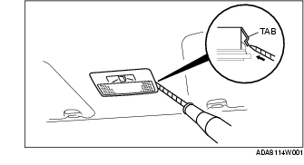
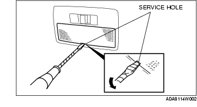

Interior light removal/installation
1. Disconnect the negative battery cable.
2. Remove in the order indicated in the table.

|
1
|
Interior light
(See Interior Light Removal Note.)
|
|
2
|
Connector
|
|
3
|
Lens
(See Lens Removal Note.)
|
|
4
|
Interior light bulb
|
3. Install in the reverse order of removal.
Interior Light Removal Note
1. Insert a tape-wrapped flathead screwdriver into the gap between the headliner and the interior light.
2. Push the tabs, then remove the interior light.

Lens Removal Note
1. Insert a tape-wrapped flathead screwdriver into the service hole and push it in the direction indicated by the arrow, then remove the lens.
